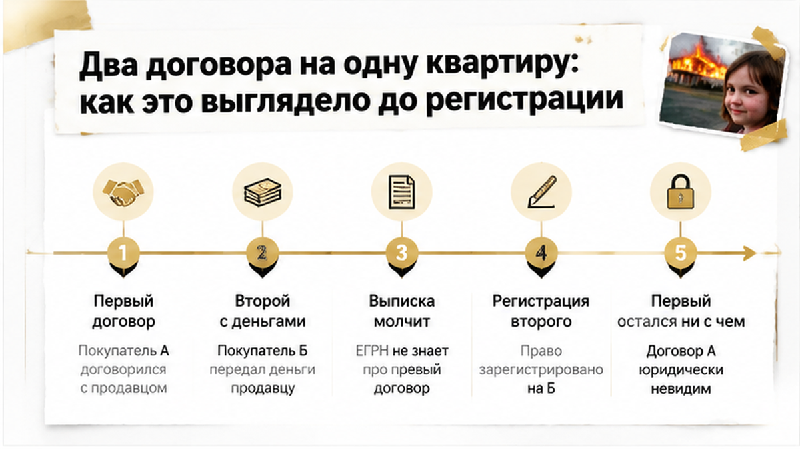
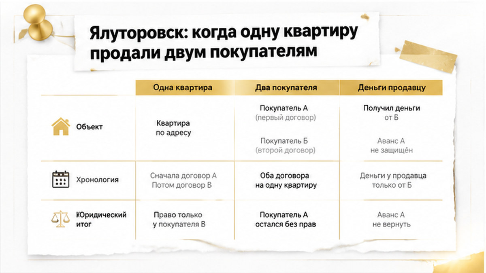
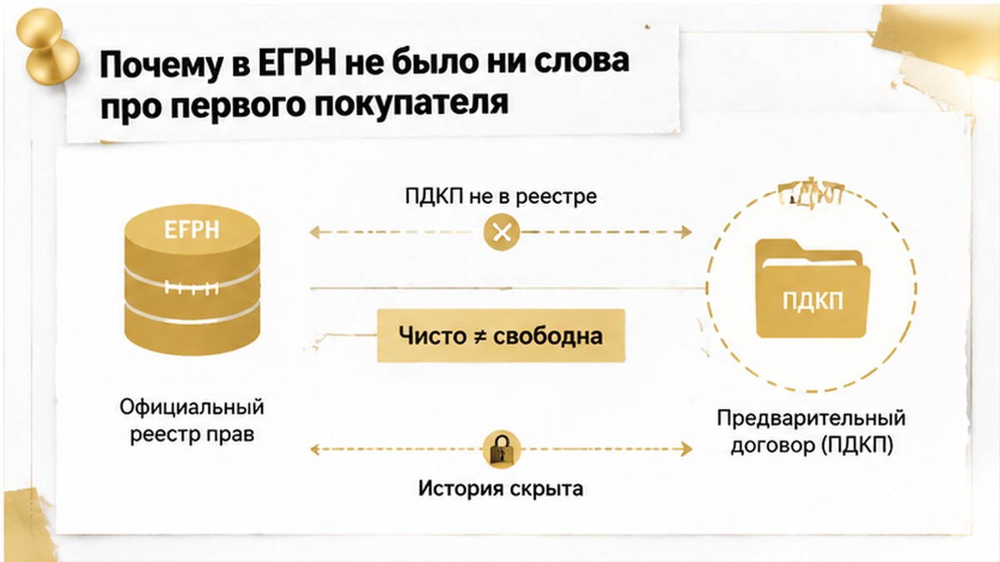
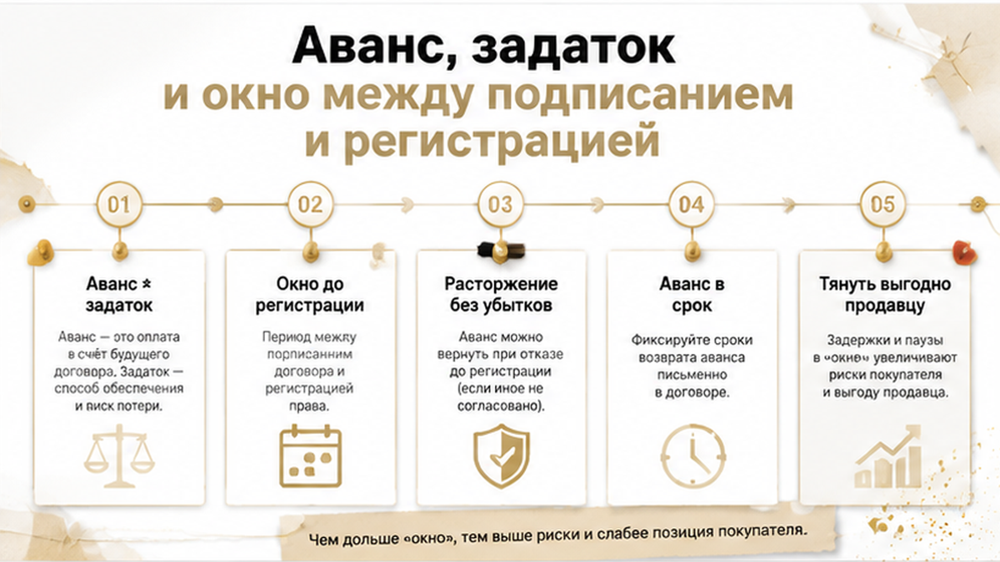
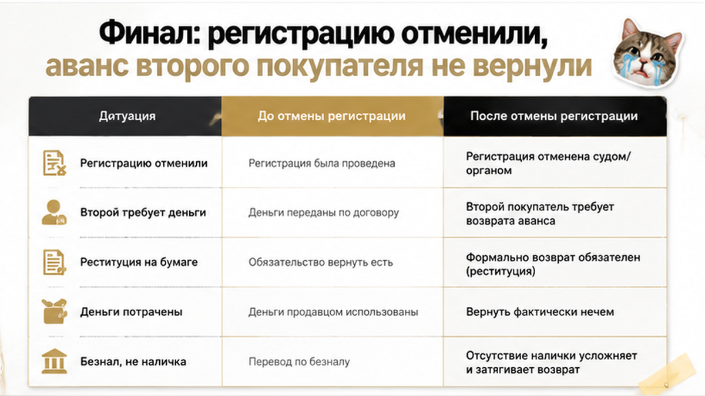
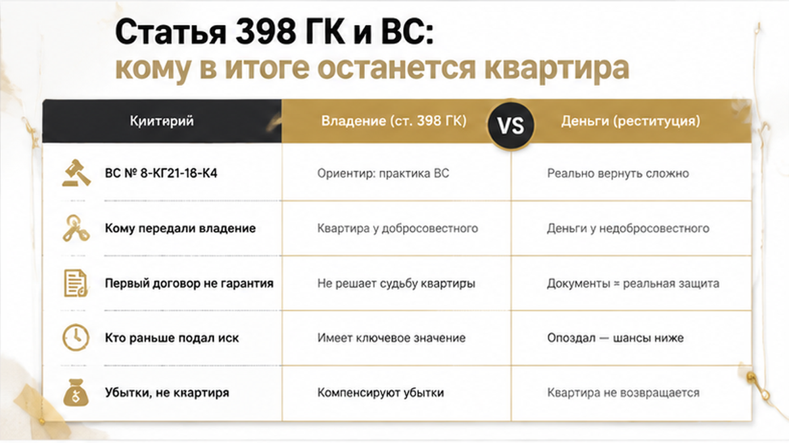
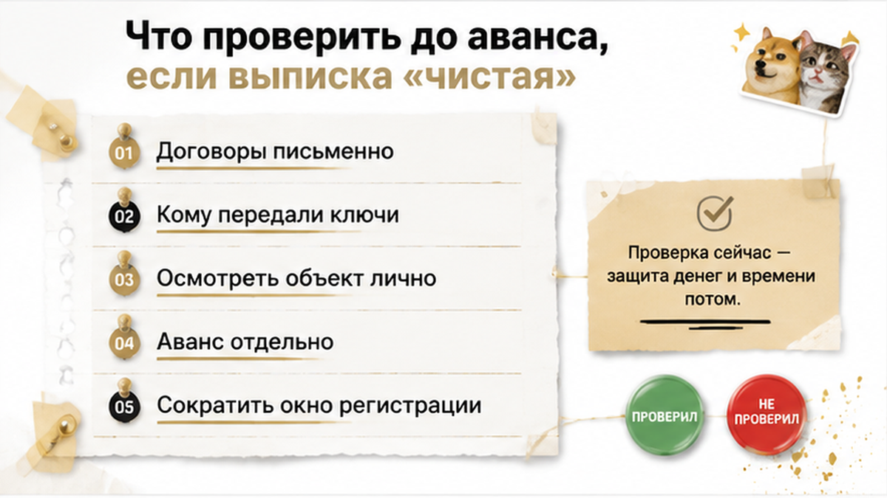

Выписка была чистая. Ни ареста, ни ипотеки, ни второго собственника — одна фамилия правообладателя, ноль обременений, аккуратный PDF на телефоне. Покупатель посмотрел на неё, выдохнул и в тот же день перевёл аванс, потому что «чего тянуть, если в документах пусто». А у продавца к этому моменту уже месяц лежал в папке подписанный предварительный договор с другим человеком — и этого договора в выписке не было и быть не могло. Одна квартира, двое покупателей, две расписки, два перевода — и только одно право собственности на выходе. Второй остаётся с бумагами, обещаниями и фразой «аванс вернём в согласованный срок».
Сразу честная рамка, чтобы вы понимали, что читаете. С вами Святослав Шакин, личный риелтор в Тюмени. Точного тюменского судебного решения ровно с такими обстоятельствами в открытом доступе я не нашёл — поэтому собираю разбор как типовую схему, а не как приговор с номером дела. Зато в Тюменской области есть опубликованный случай двойной продажи, и федеральная практика по таким спорам описана достаточно подробно. Ни одной выдуманной суммы, ни одного придуманного адреса здесь не будет.
Святослав Шакин, The Риэлтор, Тюмень. Разбираю двойные договоры и авансы до перевода — пришлите выписку и текст соглашения.

На вторичке право собственности переходит к покупателю не в момент подписания и не в момент перевода денег. Оно переходит после государственной регистрации перехода права. Всё, что до неё, — это обязательства. Обещания, оформленные на бумаге.
И пока регистрации нет, собственником в ЕГРН остаётся продавец. Со всей полнотой возможностей: подписать ещё один договор, взять ещё один аванс, сказать первому покупателю, что «не сложилось». Юридически это не превращается автоматически в мошенничество. Это превращается в конкуренцию обязательств — двое претендуют на одну вещь, а вещь одна.
Как это выглядит по шагам, если разложить.
Сначала подписывается предварительный договор или соглашение об авансе с первым покупателем. В нём почти всегда есть срок выхода на основную сделку: две-три недели, иногда месяц. Покупателю нужно продать свою квартиру, дождаться одобрения ипотеки, дособрать первоначальный взнос. Нормальная история, так работает половина рынка.
Формально в этот месяц квартира занята договорённостью. Фактически объявление продолжает висеть, телефон продавца продолжает звонить, показы идут. Приходит второй покупатель — с деньгами на руках, без ипотеки, готовый выйти на сделку послезавтра. Иногда — готовый доплатить.
Продавец берёт аванс и у него.
Дальше начинается то, что второй покупатель замечает слишком поздно. Продавец не спешит на сделку ни с одним, ни с другим. Тянет сроки. Ссылается на выписку из другой квартиры, на справку, которую «не дают», на родственника в отпуске. Ему выгодно держать двоих в подвешенном состоянии: тот, кто первым сорвётся, либо оставит неустойку, либо согласится «подождать ещё чуть-чуть».
А в бумагах при этом сидит аккуратная оговорка: договор может быть расторгнут без возмещения убытков, аванс возвращается «в течение согласованного срока». Формулировка выглядит нейтрально. Работает — в одну сторону.
Обычный покупатель на просмотре спрашивает: «А в выписке никого нет — значит, квартира свободна?» Я на этом же просмотре спрашиваю другое: кому переданы ключи, есть ли подписанные ранее авансовые соглашения и почему объект, который «уже почти продан», всё ещё в рекламе. Разница в вопросах и есть разница в исходе.

Чтобы это не звучало как страшилка из интернета — вот опубликованный региональный эпизод. Ялуторовск, Тюменская область, материал URA.RU от июня 2026 года.
Женщина купила квартиру и жила в ней. Примерно через год выяснилось, что у этого же объекта есть второй законный собственник. Продажу вёл риелтор по доверенности от владельца: одну квартиру продали двум покупателям, деньги ушли продавцу от обоих, а сам объект продавец решил оставить тому, кто заплатил больше.
Дальше — по учебнику. Первый договор попытались расторгнуть, сославшись на тот самый пункт о расторжении без возмещения убытков. Первого покупателя попытались выселить. По заявлению шла доследственная проверка полиции.
И здесь я проговорю прямо, без желания сделать текст драматичнее. Доследственная проверка — это не установленная вина. Это стадия, на которой ещё ничего не доказано. Прозвучавшие в пересказе адвоката слова про другие квартиры в Тобольске — тоже позиция стороны в СМИ, а не факт, зафиксированный судом. Я не имею права выдавать одно за другое, и вы не имеете права строить на этом выводы о конкретных людях.
Но механику этот случай показывает честно: двойная продажа в Тюменской области — не теория, а описанный в прессе эпизод. И доверенность в нём не защита, а лишний слой риска. Про это у меня есть отдельный разбор — сделка, где продавец прилетел один, а квартиру продавали четверо: одна бумага с печатью нотариуса тихо превращается в чужие полномочия, и покупатель об этом узнаёт последним.

Вот та самая деталь, из-за которой второй покупатель спал спокойно. Предварительный договор купли-продажи и соглашение об авансе в Росреестре не регистрируются. Их нет в ЕГРН вообще: ни притязания, ни отметки, ни сноски мелким шрифтом о том, что у продавца уже есть обязательство перед другим человеком.
Выписка честно показывает то, что ей положено показывать. Собственника. Обременения. Аресты. Ипотеку. Договорённости продавца она не показывает, потому что не умеет.
«А в выписке никого нет — значит, свободна?» — этот вопрос я слышу почти на каждом объекте. И отвечаю всегда одинаково: в выписке нет зарегистрированных прав и притязаний третьих лиц. Это всё. Между «в выписке чисто» и «квартира свободна для сделки» лежит зона, которую заполняет не Росреестр, а поведение продавца, история объекта и ваша собственная проверка.
Разница в вопросах видна сразу. Обычный покупатель смотрит на пустую графу «обременения» и выдыхает. Риэлтор в этот момент спрашивает другое: кому отданы ключи, кто фактически живёт в квартире, какое основание права и как давно, подписывались ли раньше авансовые соглашения и чем подтверждено их расторжение.
Добавьте ограничение самих онлайн-выписок. Быстрый PDF из приложения не всегда показывает полную историю объекта: короткий срок владения, переход по наследству, договор дарения, цепочку прежних собственников. Вы видите текущий срез, а не биографию квартиры. Для двойной продажи это критично — схема живёт ровно в том окне, где реестр ещё молчит.
Похожая логика была в тюменском случае, где родственники остановили продажу уже на финальной стадии. Документы выглядели нормально. Риск сидел не в выписке, а в обстоятельствах вокруг продавца.

Именно поэтому длина окна между авансом и регистрацией — не организационная мелочь, а размер риска. Две недели «пока родственник вернётся из отпуска» — две недели, в которые квартиру можно продать ещё раз.
Дальше — вторая путаница, на которой ловятся почти все. Аванс — это не задаток. Аванс возвращается при расторжении, но продавца за срыв сделки ничем не наказывает. У задатка другая механика и другие последствия, и в договоре платёж должен быть назван своим словом. Если в бумаге написано «аванс», а вы в голове держите защиту задатка, у вас нет ни того, ни другого — есть только надежда.
И третья вещь, которую в соглашениях об авансе пишут аккуратным нейтральным шрифтом: договор может быть расторгнут без возмещения убытков, а аванс возвращается «в течение согласованного срока». Читается как формальность. Работает в одну сторону.
Пока обе стороны в подвешенном состоянии, продавцу выгодно тянуть. Тот, кто первым сорвётся, оставит неустойку или согласится «подождать ещё немного». Тот, кто заплатит больше, получит квартиру.

Типовая схема после двойной продажи: первый покупатель с ключами идёт в суд, регистрация по второму договору оспаривается, второй остаётся с требованием к продавцу. Аванс, который не вернулся — отдельная история. Расторжение договора даёт реституцию: деньги должны вернуться. Но «должны вернуться» и «вернулись» — разные события. Сумму нужно взыскать, потом найти у продавца имущество, потом дождаться исполнения. Life.ru пишет об этом без иллюзий: если продавец деньги уже потратил, вернуть их крайне сложно, и тогда всё зависит от банковских следов платежа.
Вот поэтому я против «наличкой в машине». Расписку написали, а денег на счёте нет — это отдельная, очень тюменская история, и она заканчивается ровно там же.
Отдельно по Тюмени: юрист Ишкиев в материале 72.ru описывал ситуацию, когда покупатель остаётся и без квартиры, и без денег из-за неплатёжеспособного продавца. Там речь шла о реституции в целом, а не о двойной продаже. Для кошелька исход тот же.

Без федеральной рамки финал читается неправильно, поэтому вот она. Определение Верховного суда РФ № 8-КГ21-16-К4 — Краснодарский край, привожу его только как аналогию, не как «наше» дело — построено на статье 398 ГК РФ и пункте 61 Пленума ВС № 10/22.
Логика такая. Если на одну вещь заключено несколько договоров купли-продажи, суд может зарегистрировать право за тем покупателем, кому имущество фактически передали. Остальные получают не квартиру, а право требовать с продавца возмещение убытков. Верховный суд тогда отменил решения нижестоящих судов именно потому, что они не выяснили, кому реально перешло владение.
Статья 398 добавляет второй уровень. Приоритет у более раннего обязательства — но только пока вещь никому не передана. А если и порядок неясен, преимущество у того, кто раньше подал иск.
Отсюда вывод, который ломает бытовую логику: правило «первый договор всегда побеждает» не работает. Побеждает комбинация — передача владения, регистрация, дата иска, качество доказательств.
Так и складывается финал типовой схемы. Первый покупатель, которому квартиру фактически передали и вручили ключи, идёт в суд. Регистрация по второму договору либо не доходит до конца, либо оспаривается. И второй покупатель остаётся не с квадратными метрами, а с бумажным требованием к продавцу, который уже потратил деньги.
Как выглядит момент, когда одобрение уже есть, а регистрация рушится из-за одной строки, я показывал отдельно: ипотеку одобрили, а регистрацию отменили.
А вы бы внесли аванс, если выписка чистая, а риелтор продавца клянётся, что других покупателей нет? Напишите в комментариях — мне правда интересно, где у людей проходит граница доверия.

Дальше практика из этого казуса, а не абстрактный «как купить квартиру». Пустая графа «обременения» не означает, что продавец никому ничего не обещал. Проверять надо не только запись в реестре, но и владение.
| Что проверяем | Видно в выписке ЕГРН | Не видно в выписке | Чем закрываем |
|---|---|---|---|
| Собственник и его право | Да, актуальный правообладатель | Обещания другим покупателям | Заверения в договоре, переписка, письменные вопросы |
| Предварительный договор, аванс | Нет, не регистрируется | Полностью скрыто от покупателя | Прямой письменный вопрос плюс условие о возврате аванса |
| Фактическое владение | Нет | Кто получил ключи и доступ | Осмотр, акт приёма-передачи, проверка проживающих |
| История переходов права | Частично | Наследство, дарение, короткие сроки владения | Расширенные сведения и документы-основания |
| Платёжеспособность продавца на случай реституции | Нет | Долги, потраченные деньги | Безнал, банковские следы, минимум предоплаты |
И ещё одна граница, чтобы не строить ложных надежд. Даже когда сделку разворачивают и суд возвращает стороны в исходное положение, вернуть деньги обычно труднее, чем отменить запись: если продавец средства израсходовал, покупатель может остаться и без квартиры, и без денег. Дешевле один вечер проверок до аванса, чем год судов после.
А вы бы внесли аванс, если выписка чистая, а риелтор продавца клянётся, что других покупателей нет? Напишите в комментариях — особенно если у вас была ситуация, когда «единственный покупатель» оказался вторым.
На практике проверка перед авансом занимает один вечер, не месяц.
Я запрашиваю документы-основания и историю перехода права. Задаю продавцу и его представителю письменные вопросы про ранее подписанные договоры и авансовые соглашения. Смотрю квартиру и фиксирую, у кого ключи и кто там реально живёт. В авансовое соглашение вписываю условия возврата под конкретные риски — включая двойную продажу.
Отдельно проверяю, кто в действительности принимает решение по объекту. Бывает, что продавец формально один, а сценарий сделки ведут совсем другие люди — такой случай я описывал в материале о пожилом продавце, которого вели по телефону.
Это не броня от всех рисков. Это ровно та работа, которой не хватило второму покупателю в нашем казусе.
Материал проверен: Святослав Шакин, личный риэлтор в Тюмени. Ориентир для покупателя, не индивидуальная юридическая консультация.